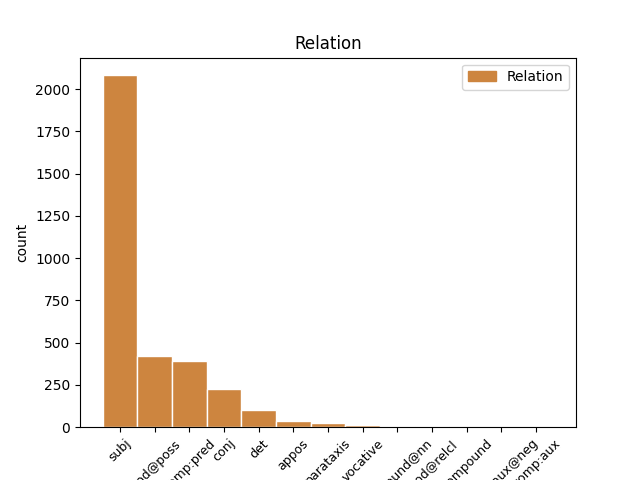
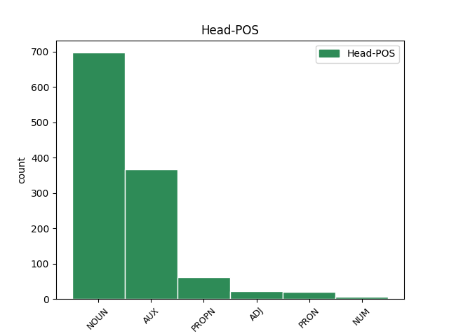
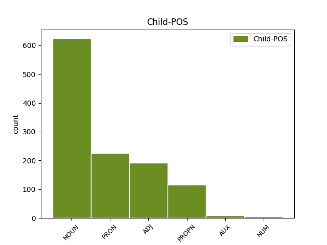

Distribution of features within this leaf



Agreement Rules sorted by frequency.
- When the dependent token is the predicative complements(comp:pred) of the head token, and the head token is AUX and the dependent token is ADJ.
1 Lea leat AUX V Mood=Ind|Number=Sing|Person=3|Tense=Pres|VerbForm=Fin 0 _ _ _
2 eahpečielggas eahpečielggas ADJ A Case=Nom|Number=Sing 1 comp:pred _ _
3 lea _ _ _ _ 0 _ _ _
4 go _ _ _ _ 0 _ _ _
5 mánáidgárddiid _ _ _ _ 0 _ _ _
6 lohku _ _ _ _ 0 _ _ _
7 lassánan _ _ _ _ 0 _ _ _
8 vai _ _ _ _ 0 _ _ _
9 unnon _ _ _ _ 0 _ _ _
10 . _ _ _ _ 0 _ _ _
1 Ohcci ohcci NOUN N Case=Gen|Number=Sing 2 mod@poss _ _
2 guovttos guovttos NOUN N Case=Nom|Number=Sing|PronType=Coll 0 _ _ _
3 áigguiga _ _ _ _ 0 _ _ _
4 ovdánahttit _ _ _ _ 0 _ _ _
5 áibbas _ _ _ _ 0 _ _ _
6 ođđa _ _ _ _ 0 _ _ _
7 ja _ _ _ _ 0 _ _ _
8 konkrehta _ _ _ _ 0 _ _ _
9 buktagiid _ _ _ _ 0 _ _ _
10 . _ _ _ _ 0 _ _ _
1 Oahpaheaddji _ _ _ _ 0 _ _ _
2 šattai _ _ _ _ 0 _ _ _
3 geavahit _ _ _ _ 0 _ _ _
4 buot _ _ _ _ 0 _ _ _
5 čehppodagas _ _ _ _ 0 _ _ _
6 , _ _ _ _ 0 _ _ _
7 amas _ _ _ _ 0 _ _ _
8 massit _ _ _ _ 0 _ _ _
9 vátna _ _ _ _ 0 _ _ _
10 oahppiidis _ _ _ _ 0 _ _ _
11 , _ _ _ _ 0 _ _ _
12 lohku _ _ _ _ 0 _ _ _
13 ii _ _ _ _ 0 _ _ _
14 ožžon _ _ _ _ 0 _ _ _
15 heađisge _ _ _ _ 0 _ _ _
16 njiedjat _ _ _ _ 0 _ _ _
17 vuollel _ _ _ _ 0 _ _ _
18 viđa _ _ _ _ 0 _ _ _
19 , _ _ _ _ 0 _ _ _
20 dasgo _ _ _ _ 0 _ _ _
21 dalle _ _ _ _ 0 _ _ _
22 gielddas gielda NOUN N Case=Loc|Number=Sing 0 _ _ _
23 dahje _ _ _ _ 0 _ _ _
24 Skuvlaráđđehusas skuvlaráđđehus NOUN N Case=Loc|Number=Sing 22 conj _ _
25 lei _ _ _ _ 0 _ _ _
26 vuoigatvuohta _ _ _ _ 0 _ _ _
27 loahpahit _ _ _ _ 0 _ _ _
28 diekkár _ _ _ _ 0 _ _ _
29 gánnetmeahttun _ _ _ _ 0 _ _ _
30 fálaldaga _ _ _ _ 0 _ _ _
31 . _ _ _ _ 0 _ _ _
1 Dán _ _ _ _ 0 _ _ _
2 mii _ _ _ _ 0 _ _ _
3 gávnnaimet _ _ _ _ 0 _ _ _
4 , _ _ _ _ 0 _ _ _
5 dutkka _ _ _ _ 0 _ _ _
6 mat _ _ _ _ 0 _ _ _
7 leago leat AUX V Mood=Ind|Number=Sing|Person=3|Tense=Pres|VerbForm=Fin 0 _ _ _
8 dat _ _ _ _ 0 _ _ _
9 du _ _ _ _ 0 _ _ _
10 bártni _ _ _ _ 0 _ _ _
11 gákti gákti NOUN N Case=Nom|Number=Sing 7 comp:pred _ SpaceAfter=No
12 . _ _ _ _ 0 _ _ _
1 Gárvodeahkku _ _ _ _ 0 _ _ _
2 ja _ _ _ _ 0 _ _ _
3 mannu _ _ _ _ 0 _ _ _
4 geahččat _ _ _ _ 0 _ _ _
5 dien diet PRON Pron Case=Acc|Number=Sing|PronType=Dem 6 det _ _
6 nieidda nieida NOUN N Case=Acc|Number=Sing 0 _ _ _
7 , _ _ _ _ 0 _ _ _
8 gii _ _ _ _ 0 _ _ _
9 váccii _ _ _ _ 0 _ _ _
10 stuora _ _ _ _ 0 _ _ _
11 gápmagiiguin _ _ _ _ 0 _ _ _
12 . _ _ _ _ 0 _ _ _
1 Giitu _ _ _ _ 0 _ _ _
2 mu mun PRON Pron Case=Gen|Number=Sing|Person=1|PronType=Prs 3 mod@poss _ _
3 oasis oassi NOUN N Case=Loc|Number=Sing 0 _ _ _
4 ! _ _ _ _ 0 _ _ _
1 Gállábárdni _ _ _ _ 0 _ _ _
2 ja _ _ _ _ 0 _ _ _
3 Mánučuovga _ _ _ _ 0 _ _ _
4 ceggiiga _ _ _ _ 0 _ _ _
5 vuosttaš _ _ _ _ 0 _ _ _
6 goađi _ _ _ _ 0 _ _ _
7 čáppa _ _ _ _ 0 _ _ _
8 Anárjávrri Anárjávri PROPN N Case=Gen|Number=Sing 9 mod@poss _ _
9 gáddevuovdái gáddevuovdi NOUN N Case=Ill|Number=Sing 0 _ _ _
10 . _ _ _ _ 0 _ _ _
1 Gállá Gállá PROPN N Case=Nom|Number=Sing 0 _ _ _
2 ja _ _ _ _ 0 _ _ _
3 Fávdna Fávdna PROPN N Case=Nom|Number=Sing 1 conj _ _
4 joatkiba _ _ _ _ 0 _ _ _
5 almmis _ _ _ _ 0 _ _ _
6 Stuorra _ _ _ _ 0 _ _ _
7 Sarvva _ _ _ _ 0 _ _ _
8 bivddu _ _ _ _ 0 _ _ _
9 ja _ _ _ _ 0 _ _ _
10 joatkiba _ _ _ _ 0 _ _ _
11 áinge _ _ _ _ 0 _ _ _
12 . _ _ _ _ 0 _ _ _
1 Dat _ _ _ _ 0 _ _ _
2 gal _ _ _ _ 0 _ _ _
3 lei leat AUX V Mood=Ind|Number=Sing|Person=3|Tense=Past|VerbForm=Fin 0 _ _ _
4 beare _ _ _ _ 0 _ _ _
5 unnán unnán PRON Pron Case=Nom|Number=Sing|PronType=Ind 3 comp:pred _ SpaceAfter=No
6 . _ _ _ _ 0 _ _ _
1 Eamit _ _ _ _ 0 _ _ _
2 oainnat _ _ _ _ 0 _ _ _
3 diđii _ _ _ _ 0 _ _ _
4 , _ _ _ _ 0 _ _ _
5 ahte _ _ _ _ 0 _ _ _
6 Stuorra _ _ _ _ 0 _ _ _
7 Sarvva _ _ _ _ 0 _ _ _
8 fáktii _ _ _ _ 0 _ _ _
9 Riibmagállis Riibmagállis PROPN N Case=Nom|Number=Sing 0 _ _ _
10 , _ _ _ _ 0 _ _ _
11 buot _ _ _ _ 0 _ _ _
12 gievramus _ _ _ _ 0 _ _ _
13 stállu stállu NOUN N Case=Nom|Number=Sing 9 appos _ SpaceAfter=No
14 . _ _ _ _ 0 _ _ _
1 Boasii _ _ _ _ 0 _ _ _
2 riegádii _ _ _ _ 0 _ _ _
3 Obed _ _ _ _ 0 _ _ _
4 , _ _ _ _ 0 _ _ _
5 gean _ _ _ _ 0 _ _ _
6 eadni _ _ _ _ 0 _ _ _
7 lei leat AUX V Mood=Ind|Number=Sing|Person=3|Tense=Past|VerbForm=Fin 0 _ _ _
8 Rut Rut PROPN N Case=Nom|Number=Sing 7 comp:pred _ SpaceAfter=No
9 , _ _ _ _ 0 _ _ _
10 Obedii _ _ _ _ 0 _ _ _
11 riegádii _ _ _ _ 0 _ _ _
12 Isai _ _ _ _ 0 _ _ _
13 , _ _ _ _ 0 _ _ _
14 ja _ _ _ _ 0 _ _ _
15 Isajii _ _ _ _ 0 _ _ _
16 riegádii _ _ _ _ 0 _ _ _
17 Dávvet _ _ _ _ 0 _ _ _
18 , _ _ _ _ 0 _ _ _
19 gonagas _ _ _ _ 0 _ _ _
20 . _ _ _ _ 0 _ _ _
1 Muhto _ _ _ _ 0 _ _ _
2 Larsen _ _ _ _ 0 _ _ _
3 ii _ _ _ _ 0 _ _ _
4 loga _ _ _ _ 0 _ _ _
5 NRK:i _ _ _ _ 0 _ _ _
6 iežas _ _ _ _ 0 _ _ _
7 eahpeduhtavažžan _ _ _ _ 0 _ _ _
8 BB BB NOUN N Case=Gen|Number=Sing 9 compound@nn _ _
9 Sámedikke Sámediggi PROPN N Case=Gen|Number=Sing 0 _ _ _
10 joavkku _ _ _ _ 0 _ _ _
11 politihkalaš _ _ _ _ 0 _ _ _
12 doaimmain _ _ _ _ 0 _ _ _
13 . _ _ _ _ 0 _ _ _
1 Dasgo _ _ _ _ 0 _ _ _
2 bargi _ _ _ _ 0 _ _ _
3 lea _ _ _ _ 0 _ _ _
4 bálkkás bálká NOUN N Case=Gen|Number=Sing|Number[psor]=Sing|Person[psor]=3 5 mod@poss _ _
5 veara veara ADJ A Case=Nom|Number=Sing 0 _ _ _
6 . _ _ _ _ 0 _ _ _
1 Gállá _ _ _ _ 0 _ _ _
2 hálidii _ _ _ _ 0 _ _ _
3 oahpahit _ _ _ _ 0 _ _ _
4 bártniidis _ _ _ _ 0 _ _ _
5 seamma _ _ _ _ 0 _ _ _
6 buorre _ _ _ _ 0 _ _ _
7 čuoigin _ _ _ _ 0 _ _ _
8 ja _ _ _ _ 0 _ _ _
9 bivdoalmmájin _ _ _ _ 0 _ _ _
10 go _ _ _ _ 0 _ _ _
11 son son PRON Pron Case=Nom|Number=Sing|Person=3|PronType=Prs 0 _ _ _
12 ieš ieš PRON Pron Case=Nom|Number=Sing|PronType=Prs|Reflex=Yes 11 det _ _
13 lei _ _ _ _ 0 _ _ _
14 . _ _ _ _ 0 _ _ _
1 De _ _ _ _ 0 _ _ _
2 bođii _ _ _ _ 0 _ _ _
3 oahpaheaddji oahpaheaddji NOUN N Case=Nom|Number=Sing 0 _ _ _
4 , _ _ _ _ 0 _ _ _
5 muhtin _ _ _ _ 0 _ _ _
6 lullirivgu lullirivgu NOUN N Case=Nom|Number=Sing 3 appos _ SpaceAfter=No
7 , _ _ _ _ 0 _ _ _
8 dárkkistit _ _ _ _ 0 _ _ _
9 basadeami _ _ _ _ 0 _ _ _
10 . _ _ _ _ 0 _ _ _
1 Álgoálbmogat _ _ _ _ 0 _ _ _
2 ellet _ _ _ _ 0 _ _ _
3 hui _ _ _ _ 0 _ _ _
4 iešguđetlágán _ _ _ _ 0 _ _ _
5 eavttuiguin _ _ _ _ 0 _ _ _
6 ja _ _ _ _ 0 _ _ _
7 sáhttet _ _ _ _ 0 _ _ _
8 leat _ _ _ _ 0 _ _ _
9 riggát rikkis ADJ A Case=Nom|Number=Plur 0 _ _ _
10 dehe _ _ _ _ 0 _ _ _
11 geafit geafi ADJ A Case=Nom|Number=Plur 9 conj _ SpaceAfter=No
12 . _ _ _ _ 0 _ _ _
1 Moai _ _ _ _ 0 _ _ _
2 čájehetne _ _ _ _ 0 _ _ _
3 Fávdnii Fávdna PROPN N Case=Ill|Number=Sing 0 _ _ _
4 , _ _ _ _ 0 _ _ _
5 guhte _ _ _ _ 0 _ _ _
6 lea leat AUX V Mood=Ind|Number=Sing|Person=3|Tense=Pres|VerbForm=Fin 3 mod@relcl _ _
7 buoremus _ _ _ _ 0 _ _ _
8 bivdoalmmái _ _ _ _ 0 _ _ _
9 . _ _ _ _ 0 _ _ _
1 Doppe _ _ _ _ 0 _ _ _
2 čohkohalai _ _ _ _ 0 _ _ _
3 maiddái _ _ _ _ 0 _ _ _
4 boarráseamos _ _ _ _ 0 _ _ _
5 Gállábártni _ _ _ _ 0 _ _ _
6 moarsi moarsi NOUN N Case=Nom|Number=Sing 0 _ _ _
7 Mánučuovga Mánučuovga PROPN N Case=Nom|Number=Sing 6 appos _ _
8 beaivenieguid _ _ _ _ 0 _ _ _
9 niegadeamen _ _ _ _ 0 _ _ _
10 . _ _ _ _ 0 _ _ _
1 Nuppi nubbi ADJ A Case=Gen|Number=Sing 2 mod@poss _ _
2 vuoru vuorru NOUN N Case=Gen|Number=Sing 0 _ _ _
3 goalmmát _ _ _ _ 0 _ _ _
4 minuvttas _ _ _ _ 0 _ _ _
5 Anette _ _ _ _ 0 _ _ _
6 nivkalii _ _ _ _ 0 _ _ _
7 čiehkačievččastaga _ _ _ _ 0 _ _ _
8 čábbát _ _ _ _ 0 _ _ _
9 njuolga _ _ _ _ 0 _ _ _
10 mollii _ _ _ _ 0 _ _ _
11 . _ _ _ _ 0 _ _ _
1 Giellatekno _ _ _ _ 0 _ _ _
2 bargá _ _ _ _ 0 _ _ _
3 elektrovnnalaš _ _ _ _ 0 _ _ _
4 sátnegirjjiiguin _ _ _ _ 0 _ _ _
5 : _ _ _ _ 0 _ _ _
6 mii _ _ _ _ 0 _ _ _
7 laktit _ _ _ _ 0 _ _ _
8 sátnegirjji _ _ _ _ 0 _ _ _
9 grammatihkalaš _ _ _ _ 0 _ _ _
10 analysii _ _ _ _ 0 _ _ _
11 vai _ _ _ _ 0 _ _ _
12 lea _ _ _ _ 0 _ _ _
13 vejolaš _ _ _ _ 0 _ _ _
14 oažžut _ _ _ _ 0 _ _ _
15 sihke _ _ _ _ 0 _ _ _
16 grammatihkalaš _ _ _ _ 0 _ _ _
17 analysa analysa NOUN N Case=Acc|Number=Sing 0 _ _ _
18 ja _ _ _ _ 0 _ _ _
19 jorgalusa jorgalus NOUN N Case=Acc|Number=Sing 17 comp:obj _ _
20 maiddái _ _ _ _ 0 _ _ _
21 sojahuvvon _ _ _ _ 0 _ _ _
22 sániide _ _ _ _ 0 _ _ _
23 . _ _ _ _ 0 _ _ _
1 Tabealla _ _ _ _ 0 _ _ _
2 vuosttaš _ _ _ _ 0 _ _ _
3 ceakkočuolddas _ _ _ _ 0 _ _ _
4 oaidnit _ _ _ _ 0 _ _ _
5 dan dat PRON Pron Case=Acc|Number=Sing|PronType=Dem 6 det _ _
6 golbma golbma NUM Num Case=Acc|Number=Sing|NumType=Card 0 _ _ _
7 bajitdási _ _ _ _ 0 _ _ _
8 váldofáddajoavkku _ _ _ _ 0 _ _ _
9 . _ _ _ _ 0 _ _ _
1 - _ _ _ _ 0 _ _ _
2 Makkár _ _ _ _ 0 _ _ _
3 válljenmunni válljenmunni NOUN N Case=Nom|Number=Sing 0 _ _ _
4 , _ _ _ _ 0 _ _ _
5 son son PRON Pron Case=Nom|Number=Sing|Person=3|PronType=Prs 3 conj _ _
6 huikkádii _ _ _ _ 0 _ _ _
7 . _ _ _ _ 0 _ _ _
1 Elizabeth Elizabeth PROPN N Case=Nom|Number=Sing 5 vocative _ SpaceAfter=No
2 , _ _ _ _ 0 _ _ _
3 gal _ _ _ _ 0 _ _ _
4 don _ _ _ _ 0 _ _ _
5 leat leat AUX V Mood=Ind|Number=Sing|Person=2|Tense=Pres|VerbForm=Fin 0 _ _ _
6 čábbámus _ _ _ _ 0 _ _ _
7 . _ _ _ _ 0 _ _ _
1 Diibmu _ _ _ _ 0 _ _ _
2 lea leat AUX V Mood=Ind|Number=Sing|Person=3|Tense=Pres|VerbForm=Fin 0 _ _ _
3 ovcci ovcci NUM Num Case=Nom|Number=Sing|NumType=Card 2 comp:pred _ SpaceAfter=No
4 . _ _ _ _ 0 _ _ _
1 Báhpaeamit _ _ _ _ 0 _ _ _
2 , _ _ _ _ 0 _ _ _
3 Margrethe _ _ _ _ 0 _ _ _
4 Wiig _ _ _ _ 0 _ _ _
5 , _ _ _ _ 0 _ _ _
6 gii _ _ _ _ 0 _ _ _
7 lei _ _ _ _ 0 _ _ _
8 gasku _ _ _ _ 0 _ _ _
9 giellamoivvi _ _ _ _ 0 _ _ _
10 , _ _ _ _ 0 _ _ _
11 ráhkadii _ _ _ _ 0 _ _ _
12 iežas _ _ _ _ 0 _ _ _
13 sárgumiiguin _ _ _ _ 0 _ _ _
14 sámegiela _ _ _ _ 0 _ _ _
15 Áppesa áppes NOUN N Case=Acc|Number=Sing 0 _ _ _
16 , _ _ _ _ 0 _ _ _
17 mii _ _ _ _ 0 _ _ _
18 lei leat AUX V Mood=Ind|Number=Sing|Person=3|Tense=Past|VerbForm=Fin 15 mod@relcl _ _
19 stuorra _ _ _ _ 0 _ _ _
20 ávkin _ _ _ _ 0 _ _ _
21 sámegiela _ _ _ _ 0 _ _ _
22 oahpahusas _ _ _ _ 0 _ _ _
23 . _ _ _ _ 0 _ _ _
1 Guhkes _ _ _ _ 0 _ _ _
2 ja _ _ _ _ 0 _ _ _
3 losses _ _ _ _ 0 _ _ _
4 vuojeheame _ _ _ _ 0 _ _ _
5 maŋŋá _ _ _ _ 0 _ _ _
6 sii _ _ _ _ 0 _ _ _
7 deive _ _ _ _ 0 _ _ _
8 Davvinástti Davvinásti PROPN N Case=Gen|Number=Sing 0 _ _ _
9 dahjege _ _ _ _ 0 _ _ _
10 Almmi albmi NOUN N Case=Gen|Number=Sing 8 conj _ _
11 Návlli _ _ _ _ 0 _ _ _
12 lusa _ _ _ _ 0 _ _ _
13 . _ _ _ _ 0 _ _ _
1 Gállábárdni gállábárdni NOUN N Case=Nom|Number=Sing 0 _ _ _
2 ja _ _ _ _ 0 _ _ _
3 Mánučuovga Mánučuovga PROPN N Case=Nom|Number=Sing 1 conj _ _
4 ceggiiga _ _ _ _ 0 _ _ _
5 vuosttaš _ _ _ _ 0 _ _ _
6 goađi _ _ _ _ 0 _ _ _
7 čáppa _ _ _ _ 0 _ _ _
8 Anárjávrri _ _ _ _ 0 _ _ _
9 gáddevuovdái _ _ _ _ 0 _ _ _
10 . _ _ _ _ 0 _ _ _
1 Fertet _ _ _ _ 0 _ _ _
2 vázzilit _ _ _ _ 0 _ _ _
3 vai _ _ _ _ 0 _ _ _
4 it _ _ _ _ 0 _ _ _
5 báze _ _ _ _ 0 _ _ _
6 duoin duot PRON Pron Case=Loc|Number=Plur|PronType=Dem 0 _ _ _
7 earáin eará PRON Pron Case=Loc|Number=Plur|PronType=Ind 6 appos _ SpaceAfter=No
8 . _ _ _ _ 0 _ _ _
1 Gii _ _ _ _ 0 _ _ _
2 dat dat PRON Pron Case=Nom|Number=Sing|PronType=Dem 3 det _ _
3 Spider-Man Spider-Man PROPN N Case=Nom|Number=Sing 0 _ _ _
4 lea _ _ _ _ 0 _ _ _
5 ? _ _ _ _ 0 _ _ _
1 Girjjis _ _ _ _ 0 _ _ _
2 leat _ _ _ _ 0 _ _ _
3 boares _ _ _ _ 0 _ _ _
4 govat _ _ _ _ 0 _ _ _
5 ja _ _ _ _ 0 _ _ _
6 ođđa _ _ _ _ 0 _ _ _
7 lyrihkka _ _ _ _ 0 _ _ _
8 mat _ _ _ _ 0 _ _ _
9 čatnet _ _ _ _ 0 _ _ _
10 oktii _ _ _ _ 0 _ _ _
11 doloža dološ ADJ A Case=Acc|Number=Sing 0 _ _ _
12 ja _ _ _ _ 0 _ _ _
13 dálá _ _ _ _ 0 _ _ _
14 áiggi áigi NOUN N Case=Acc|Number=Sing 11 conj _ SpaceAfter=No
15 . _ _ _ _ 0 _ _ _
1 Nilut _ _ _ _ 0 _ _ _
2 Joavkku _ _ _ _ 0 _ _ _
3 jođiheaddji _ _ _ _ 0 _ _ _
4 Annbjørg _ _ _ _ 0 _ _ _
5 Hætta _ _ _ _ 0 _ _ _
6 lohká _ _ _ _ 0 _ _ _
7 iežas _ _ _ _ 0 _ _ _
8 duhtavažžan _ _ _ _ 0 _ _ _
9 dan dat PRON Pron Case=Gen|Number=Sing|PronType=Dem 10 det _ _
10 jagáš jagáš ADJ A Case=Gen|Number=Sing 0 _ _ _
11 Nilut_Cupain _ _ _ _ 0 _ _ _
12 vaikko _ _ _ _ 0 _ _ _
13 juohke _ _ _ _ 0 _ _ _
14 jagi _ _ _ _ 0 _ _ _
15 buolašta _ _ _ _ 0 _ _ _
16 juste _ _ _ _ 0 _ _ _
17 dan _ _ _ _ 0 _ _ _
18 vahkkoloahpa _ _ _ _ 0 _ _ _
19 . _ _ _ _ 0 _ _ _
1 Juo _ _ _ _ 0 _ _ _
2 cuoŋománu _ _ _ _ 0 _ _ _
3 10. _ _ _ _ 0 _ _ _
4 beaivvi _ _ _ _ 0 _ _ _
5 ija _ _ _ _ 0 _ _ _
6 vuostá _ _ _ _ 0 _ _ _
7 mátkkoštii _ _ _ _ 0 _ _ _
8 Ruvdnaprinseassa _ _ _ _ 0 _ _ _
9 Märtha _ _ _ _ 0 _ _ _
10 badjel _ _ _ _ 0 _ _ _
11 ráji _ _ _ _ 0 _ _ _
12 Ruŧŧii _ _ _ _ 0 _ _ _
13 oktan _ _ _ _ 0 _ _ _
14 Ruvdnaprinsabára ruvdnaprinsabárra NOUN N Case=Gen|Number=Sing 15 mod@poss _ _
15 golmmain golbma NUM Num Case=Com|Number=Sing|NumType=Card 0 _ _ _
16 mánáin _ _ _ _ 0 _ _ _
17 . _ _ _ _ 0 _ _ _
1 Finnmárkku _ _ _ _ 0 _ _ _
2 fylkkagielda _ _ _ _ 0 _ _ _
3 lea _ _ _ _ 0 _ _ _
4 jagi _ _ _ _ 0 _ _ _
5 1988 _ _ _ _ 0 _ _ _
6 rájes _ _ _ _ 0 _ _ _
7 ovddidan _ _ _ _ 0 _ _ _
8 doaimmaid _ _ _ _ 0 _ _ _
9 sámi _ _ _ _ 0 _ _ _
10 álbmoga _ _ _ _ 0 _ _ _
11 várás _ _ _ _ 0 _ _ _
12 spesialistadearvvašvuođabálvalusas _ _ _ _ 0 _ _ _
13 , _ _ _ _ 0 _ _ _
14 ja _ _ _ _ 0 _ _ _
15 ráhkadii _ _ _ _ 0 _ _ _
16 jagi _ _ _ _ 0 _ _ _
17 1991 _ _ _ _ 0 _ _ _
18 fylkkagieldda _ _ _ _ 0 _ _ _
19 sámi sápmi NOUN N Case=Gen|Number=Sing 22 compound _ _
20 dearvvašvuođa- _ _ _ _ 0 _ _ _
21 ja _ _ _ _ 0 _ _ _
22 sosiálaplána sosiálaplána NOUN N Case=Acc|Number=Sing 0 _ _ _
23 . _ _ _ _ 0 _ _ _
1 Áiggi _ _ _ _ 0 _ _ _
2 mielde _ _ _ _ 0 _ _ _
3 Gállá _ _ _ _ 0 _ _ _
4 náitalii _ _ _ _ 0 _ _ _
5 ja _ _ _ _ 0 _ _ _
6 oaččui _ _ _ _ 0 _ _ _
7 golbma _ _ _ _ 0 _ _ _
8 gándda gánda NOUN N Case=Gen|Number=Sing 0 _ _ _
9 , _ _ _ _ 0 _ _ _
10 maid mii PRON Pron Case=Acc|Number=Sing|PronType=Rel 8 comp:obj _ _
11 gohčodedje _ _ _ _ 0 _ _ _
12 Gállábárdnin _ _ _ _ 0 _ _ _
13 . _ _ _ _ 0 _ _ _
1 Munnje _ _ _ _ 0 _ _ _
2 lei _ _ _ _ 0 _ _ _
3 dehálaš _ _ _ _ 0 _ _ _
4 ahte _ _ _ _ 0 _ _ _
5 áiggošin _ _ _ _ 0 _ _ _
6 leat _ _ _ _ 0 _ _ _
7 bahánihkkán bahánihkkán ADJ A Case=Nom|Number=Sing 0 _ _ _
8 , _ _ _ _ 0 _ _ _
9 váttis _ _ _ _ 0 _ _ _
10 dahje _ _ _ _ 0 _ _ _
11 fuikolas fuoikut ADJ V* Case=Nom|Number=Sing 7 comp:pred _ SpaceAfter=No
12 . _ _ _ _ 0 _ _ _
1 Jesus _ _ _ _ 0 _ _ _
2 Kristus Kristus PROPN N Case=Nom|Number=Sing 0 _ _ _
3 ieš _ _ _ _ 0 _ _ _
4 ja _ _ _ _ 0 _ _ _
5 Ipmil Ipmil PROPN N Case=Nom|Number=Sing 2 parataxis _ SpaceAfter=No
6 . _ _ _ _ 0 _ _ _
1 Lea _ _ _ _ 0 _ _ _
2 buoret _ _ _ _ 0 _ _ _
3 borramuš _ _ _ _ 0 _ _ _
4 go _ _ _ _ 0 _ _ _
5 dat dat PRON Pron Case=Nom|Number=Sing|PronType=Dem 0 _ _ _
6 maid mii PRON Pron Case=Acc|Number=Sing|PronType=Rel 5 comp:obj _ _
7 nuorat _ _ _ _ 0 _ _ _
8 dán _ _ _ _ 0 _ _ _
9 áigge _ _ _ _ 0 _ _ _
10 njillet _ _ _ _ 0 _ _ _
11 . _ _ _ _ 0 _ _ _
1 Mii mun PRON Pron Case=Nom|Number=Plur|Person=1|PronType=Prs 0 _ _ _
2 ja _ _ _ _ 0 _ _ _
3 farisealaččat farisealaš NOUN N Case=Nom|Number=Plur 1 conj _ _
4 atnit _ _ _ _ 0 _ _ _
5 borakeahttáivuođa _ _ _ _ 0 _ _ _
6 . _ _ _ _ 0 _ _ _
1 Mon _ _ _ _ 0 _ _ _
2 in _ _ _ _ 0 _ _ _
3 leat _ _ _ _ 0 _ _ _
4 dugo _ _ _ _ 0 _ _ _
5 Sivvar Sivvar PROPN N Case=Nom|Number=Sing 0 _ _ _
6 - _ _ _ _ 0 _ _ _
7 mii _ _ _ _ 0 _ _ _
8 láve _ _ _ _ 0 _ _ _
9 bissuin _ _ _ _ 0 _ _ _
10 ja _ _ _ _ 0 _ _ _
11 beatnagiin _ _ _ _ 0 _ _ _
12 mannat _ _ _ _ 0 _ _ _
13 dugo _ _ _ _ 0 _ _ _
14 livččii leat AUX V Mood=Cnd|Number=Sing|Person=3|Tense=Pres|VerbForm=Fin 5 comp:pred _ _
15 dáčča _ _ _ _ 0 _ _ _
16 . _ _ _ _ 0 _ _ _
1 Muhto _ _ _ _ 0 _ _ _
2 jos _ _ _ _ 0 _ _ _
3 mun _ _ _ _ 0 _ _ _
4 áján _ _ _ _ 0 _ _ _
5 olggos _ _ _ _ 0 _ _ _
6 bahá _ _ _ _ 0 _ _ _
7 vuoiŋŋaid _ _ _ _ 0 _ _ _
8 Ipmila Ipmil PROPN N Case=Gen|Number=Sing 9 compound@nn _ _
9 Vuoiŋŋa Vuoigŋa PROPN N Case=Gen|Number=Sing 0 _ _ _
10 fámuin _ _ _ _ 0 _ _ _
11 . _ _ _ _ 0 _ _ _
1 Váilos _ _ _ _ 0 _ _ _
2 unnán unnán PRON Pron Case=Nom|Number=Sing|PronType=Ind 0 _ _ _
3 dahje _ _ _ _ 0 _ _ _
4 ollu ollu ADJ A Case=Nom|Number=Sing 2 conj _ SpaceAfter=No
5 . _ _ _ _ 0 _ _ _
1 Ávdugasat ávdugas ADJ A Case=Nom|Number=Plur 2 comp:pred _ _
2 sii son PRON Pron Case=Nom|Number=Plur|Person=3|PronType=Prs 0 _ _ _
3 geat _ _ _ _ 0 _ _ _
4 moraštit _ _ _ _ 0 _ _ _
5 . _ _ _ _ 0 _ _ _
1 Čuollun _ _ _ _ 0 _ _ _
2 sáhttá _ _ _ _ 0 _ _ _
3 leat _ _ _ _ 0 _ _ _
4 dušše _ _ _ _ 0 _ _ _
5 okta _ _ _ _ 0 _ _ _
6 fierbmi _ _ _ _ 0 _ _ _
7 gurgaluvvon _ _ _ _ 0 _ _ _
8 , _ _ _ _ 0 _ _ _
9 muhto _ _ _ _ 0 _ _ _
10 dábálaččat _ _ _ _ 0 _ _ _
11 lea leat AUX V Mood=Ind|Number=Sing|Person=3|Tense=Pres|VerbForm=Fin 0 _ _ _
12 čuollu _ _ _ _ 0 _ _ _
13 guhkit _ _ _ _ 0 _ _ _
14 , _ _ _ _ 0 _ _ _
15 golbma golbma NUM Num Case=Nom|Number=Sing|NumType=Card 11 conj _ SpaceAfter=No
16 , _ _ _ _ 0 _ _ _
17 njeallja _ _ _ _ 0 _ _ _
18 fierbmebaji _ _ _ _ 0 _ _ _
19 guhku _ _ _ _ 0 _ _ _
20 . _ _ _ _ 0 _ _ _
1 Čuollun _ _ _ _ 0 _ _ _
2 sáhttá _ _ _ _ 0 _ _ _
3 leat _ _ _ _ 0 _ _ _
4 dušše _ _ _ _ 0 _ _ _
5 okta _ _ _ _ 0 _ _ _
6 fierbmi _ _ _ _ 0 _ _ _
7 gurgaluvvon _ _ _ _ 0 _ _ _
8 , _ _ _ _ 0 _ _ _
9 muhto _ _ _ _ 0 _ _ _
10 dábálaččat _ _ _ _ 0 _ _ _
11 lea _ _ _ _ 0 _ _ _
12 čuollu _ _ _ _ 0 _ _ _
13 guhkit _ _ _ _ 0 _ _ _
14 , _ _ _ _ 0 _ _ _
15 golbma golbma NUM Num Case=Nom|Number=Sing|NumType=Card 0 _ _ _
16 , _ _ _ _ 0 _ _ _
17 njeallja njeallja NUM Num Case=Nom|Number=Sing|NumType=Card 15 conj _ _
18 fierbmebaji _ _ _ _ 0 _ _ _
19 guhku _ _ _ _ 0 _ _ _
20 . _ _ _ _ 0 _ _ _
1 Son _ _ _ _ 0 _ _ _
2 lea _ _ _ _ 0 _ _ _
3 mu mun PRON Pron Case=Gen|Number=Sing|Person=1|PronType=Prs 4 mod@poss _ _
4 buorre buorre ADJ A Case=Nom|Number=Sing 0 _ _ _
5 olmmái _ _ _ _ 0 _ _ _
6 . _ _ _ _ 0 _ _ _
1 Lásse _ _ _ _ 0 _ _ _
2 , _ _ _ _ 0 _ _ _
3 Iŋgá Iŋgá PROPN N Case=Nom|Number=Sing 0 _ _ _
4 ja _ _ _ _ 0 _ _ _
5 mun mun PRON Pron Case=Nom|Number=Sing|Person=1|PronType=Prs 3 conj _ _
6 leimmet _ _ _ _ 0 _ _ _
7 Romssas _ _ _ _ 0 _ _ _
8 . _ _ _ _ 0 _ _ _
1 Dan _ _ _ _ 0 _ _ _
2 mun _ _ _ _ 0 _ _ _
3 muitalan _ _ _ _ 0 _ _ _
4 dušše _ _ _ _ 0 _ _ _
5 dutnje don PRON Pron Case=Ill|Number=Sing|Person=2|PronType=Prs 0 _ _ _
6 , _ _ _ _ 0 _ _ _
7 iežan _ _ _ _ 0 _ _ _
8 buoremus _ _ _ _ 0 _ _ _
9 olbmái olmmái NOUN N Case=Ill|Number=Sing 5 appos _ SpaceAfter=No
10 . _ _ _ _ 0 _ _ _
1 Mii _ _ _ _ 0 _ _ _
2 leat leat AUX V Mood=Ind|Number=Plur|Person=1|Tense=Pres|VerbForm=Fin 0 _ _ _
3 birolaččat _ _ _ _ 0 _ _ _
4 , _ _ _ _ 0 _ _ _
5 bahágasat bahágas NOUN N Case=Nom|Number=Plur 2 conj _ _
6 ja _ _ _ _ 0 _ _ _
7 vearrodahkkit _ _ _ _ 0 _ _ _
8 . _ _ _ _ 0 _ _ _
1 Muhto _ _ _ _ 0 _ _ _
2 diet _ _ _ _ 0 _ _ _
3 Will _ _ _ _ 0 _ _ _
4 Turner Turner PROPN N Case=Nom|Number=Sing 0 _ _ _
5 , _ _ _ _ 0 _ _ _
6 son son PRON Pron Case=Nom|Number=Sing|Person=3|PronType=Prs 4 appos _ _
7 nai _ _ _ _ 0 _ _ _
8 lea _ _ _ _ 0 _ _ _
9 fiinna _ _ _ _ 0 _ _ _
10 olmmái _ _ _ _ 0 _ _ _
11 . _ _ _ _ 0 _ _ _
1 Son _ _ _ _ 0 _ _ _
2 oinnii _ _ _ _ 0 _ _ _
3 buot _ _ _ _ 0 _ _ _
4 dan dat PRON Pron Case=Acc|Number=Sing|PronType=Dem 0 _ _ _
5 mii _ _ _ _ 0 _ _ _
6 lea leat AUX V Mood=Ind|Number=Sing|Person=3|Tense=Pres|VerbForm=Fin 4 mod@relcl _ _
7 ráhkistan _ _ _ _ 0 _ _ _
8 ja _ _ _ _ 0 _ _ _
9 gudnejahttin _ _ _ _ 0 _ _ _
10 veara _ _ _ _ 0 _ _ _
11 . _ _ _ _ 0 _ _ _
1 Fáksa fáksa NOUN N Case=Nom|Number=Sing 0 _ _ _
2 : _ _ _ _ 0 _ _ _
3 22242786 22242786 NUM Num Case=Nom|Number=Sing|NumType=Card 1 parataxis _ SpaceAfter=No
4 . _ _ _ _ 0 _ _ _
1 Son _ _ _ _ 0 _ _ _
2 lea _ _ _ _ 0 _ _ _
3 juo _ _ _ _ 0 _ _ _
4 vuorrasit _ _ _ _ 0 _ _ _
5 beallái bealli NOUN N Case=Ill|Number=Sing 0 _ _ _
6 , _ _ _ _ 0 _ _ _
7 84-jahkásaš 84-jahki ADJ N* Case=Nom|Number=Sing 5 appos _ SpaceAfter=No
8 , _ _ _ _ 0 _ _ _
9 muhto _ _ _ _ 0 _ _ _
10 dovdá _ _ _ _ 0 _ _ _
11 iežas _ _ _ _ 0 _ _ _
12 nuorran _ _ _ _ 0 _ _ _
13 dego _ _ _ _ 0 _ _ _
14 giđđarássi _ _ _ _ 0 _ _ _
15 . _ _ _ _ 0 _ _ _
1 - _ _ _ _ 0 _ _ _
2 Bártnážan bártnáš NOUN N Case=Nom|Number=Sing|Number[psor]=Sing|Person[psor]=1 5 vocative _ SpaceAfter=No
3 , _ _ _ _ 0 _ _ _
4 dat _ _ _ _ 0 _ _ _
5 lea leat AUX V Mood=Ind|Number=Sing|Person=3|Tense=Pres|VerbForm=Fin 0 _ _ _
6 eanaspábba _ _ _ _ 0 _ _ _
7 . _ _ _ _ 0 _ _ _
1 Ohcci _ _ _ _ 0 _ _ _
2 : _ _ _ _ 0 _ _ _
3 Per _ _ _ _ 0 _ _ _
4 M. _ _ _ _ 0 _ _ _
5 Buljo Buljo PROPN N Case=Nom|Number=Sing 0 _ _ _
6 , _ _ _ _ 0 _ _ _
7 Guovdageaidnu Guovdageaidnu PROPN N Case=Nom|Number=Sing 5 appos _ SpaceAfter=No
8 . _ _ _ _ 0 _ _ _
Disagree Examples:
1 Gonagas _ _ _ _ 0 _ _ _
2 Agrippa Agrippa PROPN N Case=Nom|Number=Sing 0 _ _ _
3 ja _ _ _ _ 0 _ _ _
4 dii don PRON Pron Case=Nom|Number=Plur|Person=2|PronType=Prs 2 conj _ _
5 buohkat _ _ _ _ 0 _ _ _
6 geat _ _ _ _ 0 _ _ _
7 lehpet _ _ _ _ 0 _ _ _
8 dás _ _ _ _ 0 _ _ _
9 minguin _ _ _ _ 0 _ _ _
10 ! _ _ _ _ 0 _ _ _
1 Gozihanlávdegoddi _ _ _ _ 0 _ _ _
2 galgá _ _ _ _ 0 _ _ _
3 fidnet _ _ _ _ 0 _ _ _
4 buot _ _ _ _ 0 _ _ _
5 dábuhahtti _ _ _ _ 0 _ _ _
6 dieđuid _ _ _ _ 0 _ _ _
7 Finnmárkkuopmodagas _ _ _ _ 0 _ _ _
8 , _ _ _ _ 0 _ _ _
9 maid _ _ _ _ 0 _ _ _
10 dárbbaša _ _ _ _ 0 _ _ _
11 dahkamušaidis dahkamuš NOUN N Case=Gen|Number=Plur|Number[psor]=Sing|Person[psor]=3 12 mod@poss _ _
12 čađaheapmái čađaheapmi NOUN N Case=Ill|Number=Sing 0 _ _ _
13 . _ _ _ _ 0 _ _ _
1 Guhkkelis _ _ _ _ 0 _ _ _
2 boaittobeale boaittobealli NOUN N Case=Gen|Number=Sing 4 mod@poss _ _
3 orru _ _ _ _ 0 _ _ _
4 mánát mánná NOUN N Case=Nom|Number=Plur 0 _ _ _
5 bohte _ _ _ _ 0 _ _ _
6 Gárdima _ _ _ _ 0 _ _ _
7 ja _ _ _ _ 0 _ _ _
8 Mollešjoga _ _ _ _ 0 _ _ _
9 , _ _ _ _ 0 _ _ _
10 Šuoššjávrri _ _ _ _ 0 _ _ _
11 ja _ _ _ _ 0 _ _ _
12 Iešjohleagi _ _ _ _ 0 _ _ _
13 duoddarstobuin _ _ _ _ 0 _ _ _
14 . _ _ _ _ 0 _ _ _
1 Guhkkelis _ _ _ _ 0 _ _ _
2 boaittobeale _ _ _ _ 0 _ _ _
3 orru _ _ _ _ 0 _ _ _
4 mánát _ _ _ _ 0 _ _ _
5 bohte _ _ _ _ 0 _ _ _
6 Gárdima Gárdin PROPN N Case=Gen|Number=Sing 13 mod@poss _ _
7 ja _ _ _ _ 0 _ _ _
8 Mollešjoga _ _ _ _ 0 _ _ _
9 , _ _ _ _ 0 _ _ _
10 Šuoššjávrri _ _ _ _ 0 _ _ _
11 ja _ _ _ _ 0 _ _ _
12 Iešjohleagi _ _ _ _ 0 _ _ _
13 duoddarstobuin duoddarstohpu NOUN N Case=Loc|Number=Plur 0 _ _ _
14 . _ _ _ _ 0 _ _ _
1 Guovddážis _ _ _ _ 0 _ _ _
2 dán _ _ _ _ 0 _ _ _
3 barggus _ _ _ _ 0 _ _ _
4 lea _ _ _ _ 0 _ _ _
5 Sámi Sápmi PROPN N Case=Gen|Number=Sing 6 mod@poss _ _
6 dutkamiid dutkan NOUN N Case=Gen|Number=Plur 0 _ _ _
7 guovddáš _ _ _ _ 0 _ _ _
8 . _ _ _ _ 0 _ _ _